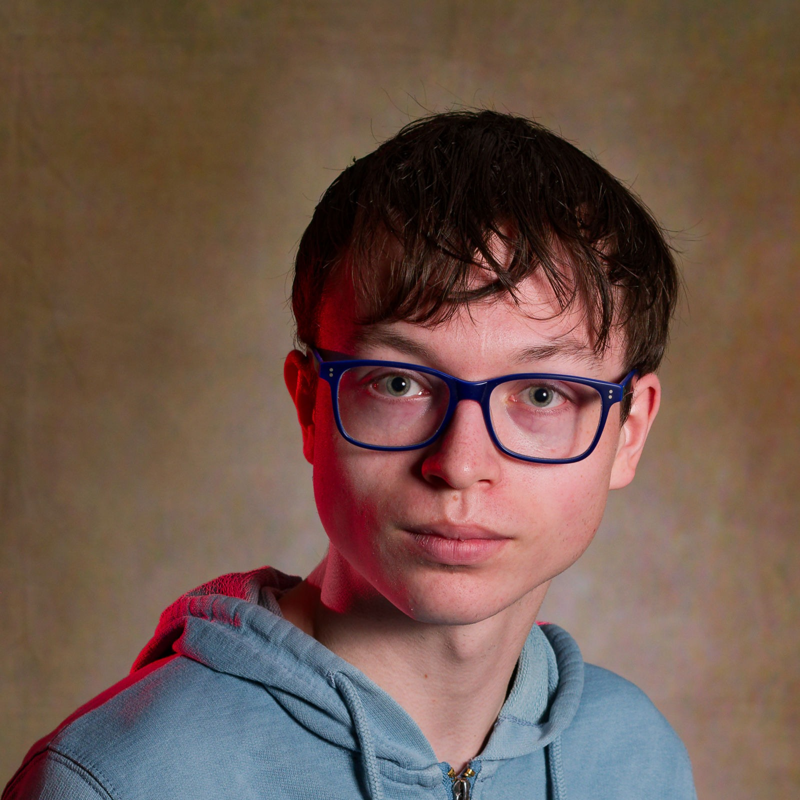

Qui suis-je ?
Qui suis-je ?
Bonjour, je m’appelle Mael Udin--Yver, j’ai 18 ans et je suis actuellement des études en Bachelor Universitaire de Technologie informatique (diplôme équivalent à une licence 3) à l'Institut Universitaire de Technologie (IUT) de Lannion. Je suis d’ailleurs admis dans le parcours d'intégration anticipé sous conditions de l'école d'ingénieur qu'est l'ENSSAT.
Au lycée, j’ai effectué la spécialité Numériques & Sciences Informatiques (NSI) via le CNED (Centre National d’Enseignement à Distance), la spécialité Mathématiques et Mathématiques option européenne.
Actuellement, je recherche un poste en alternance dans le domaine du développement logiciel pour ma deuxième et troisième année à l’IUT.
Ma formation m’a fait acquérir de nombreuses compétences, dont une majeure partie de compétences techniques, et je sais donc écrire des programmes en C, en PHP-CLI, en python, en bash, en PL/pgSQL, en java, en javaFX, etc. Je sais aussi me servir de PostgreSQL, de MySQL, de GIT et de Docker.
En début d’année (scolaire), j’ai d’ailleurs effectué seul un projet universitaire à l’IUT.
Celui-ci était codé en C et se servait du Terminal. Le but était de créer un jeu Snake où le serpent devait grandir et accélérer en mangeant des pommes, pouvoir entrer en collision avec son propre corps ou avec les bordures.
Cela s’est fait en plusieurs étapes, j’ai d’abord fait avancer le serpent tout droit, puis j’ai développé le nécessaire pour qu’il puisse changer de direction et manger des pommes avant de créer des collisions et finalement de générer la documentation appropriée.
J’ai bien entendu d’autres centres d’intérêts que le développement, j’aime bien lire des romans de science-fiction et de fantaisie et j’apprécie le fait de lire et de traduire des nouvelles inscrites dans le genre du merveilleux-scientifique.
Si je devais citer quelques-unes de mes qualités, je dirais que je suis plutôt autonome et patient.
Je m’apprête d’ailleurs à vous prouver cette première qualité dans le prochain paragraphe.
Mon expérience relative à la spécialité NSI est sûrement assez unique, j’ai fait quelques portes ouvertes d’établissement la proposant en seconde car cette spécialité n’était pas proposée dans mon lycée.
Je souhaitais cependant rester dans cet établissement, j’ai donc opté pour suivre cette spécialité via le CNED bien que cela m’ait demandé de me rendre dans les couloirs de l’administration de nombreuses fois et que je n’étais pas certain d’avoir mes trois spécialités un mois avant la rentrée scolaire de première.
J’ai donc passé 4h/semaine en 1ère et 6h/semaine en terminale sans professeur, seul devant mon ordinateur au CDI.
Bien entendu, je posais des questions quand j'en ressentais vraiment le besoin, je faisais aussi des recherches sur internet quand je rencontrais des problèmes, etc. Franchement, je pense m’en être bien sortie, j’ai eu une bonne moyenne sur cette matière, une bonne note au bac et j’ai fait 2 projets python (qui se sont chacun étalés sur plusieurs mois) qui m’ont beaucoup plus.